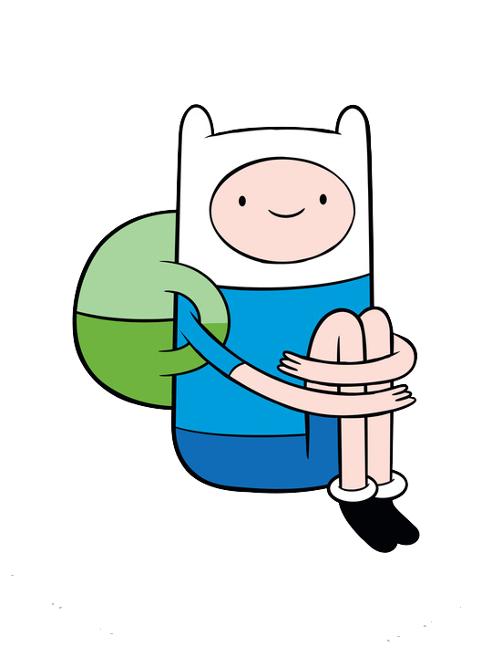

Hey, I'm Nik Rychagov
I'm writing code and trying to make some art.
Autodidact, former barista guy. I like puzzling tasks, learning &
researching something new, hiking, drawing/painting and some
fiction/non-fiction books. I'm not really into e-commerce web or some
other applications but I enjoy coding and building modern beautiful UIs
as well and
looking any opportunities for applying and improving my skills. I live & work in
Novi Sad, Serbia.
* For now I am looking for a job.
* I have more than 2 years of Front-End experience with Angular(RxJs,
Angular Universal, Angular Material) and Vue.js(2, 3 and kind of its
ecosystem with Vuex, Composition API and so on) from
big e-commerce projectsto small, thin but complex UIs in collaboration with ML devs(including
live video streaming by Websockets, data visualization with D3.js
library, building entities based in event-driven system etc.), after
that I had 1-year-break for NodeJS to research Back-End deeper and get
to know how things work on the other side, including SQL/NO-SQL
databases, GraphQL, Websockets, Microservices and so on, and now I am
ready to dive back.
* In my free time I am actively learning React.js and Three.js as best
tools available for a modern client-side applications. Time to time I'm
enjoying 3D-modeling with
Blender.
